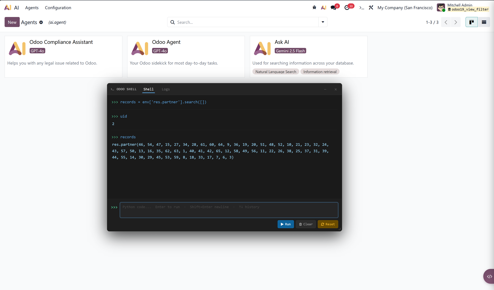
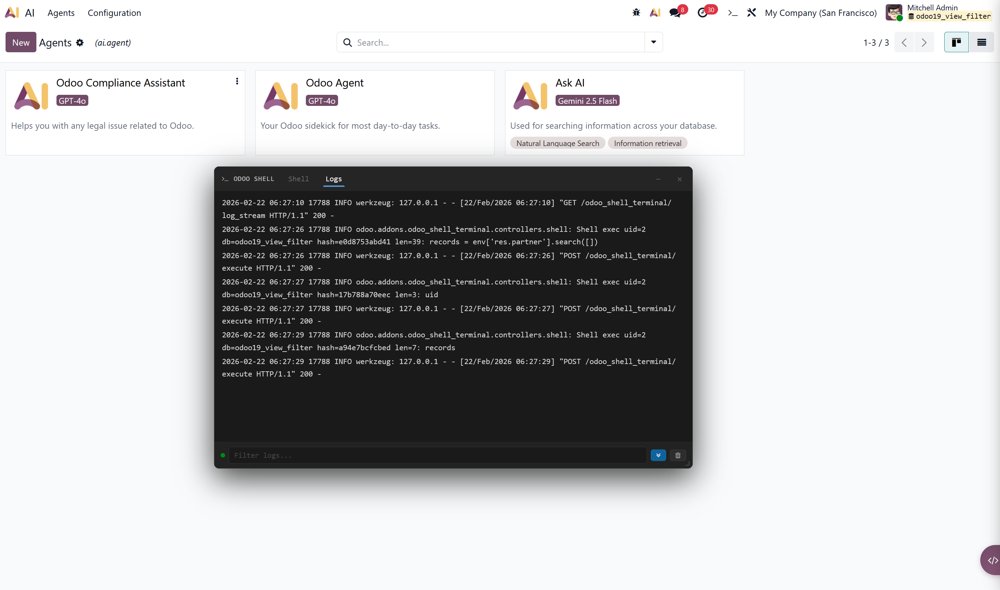

A browser-based Python shell and live log viewer — accessible from the systray as a floating panel. No SSH. No server access. Just open and run.
✦ Developed with the help of AI
Shell tab and live log viewer running in the browser
Shell Tab — Interactive Python REPL

Logs Tab — Live Server Log Stream

Everything you need to interact with your live Odoo instance from the browser
Full Python REPL against the live Odoo environment. env, uid, and user are pre-bound. Single expressions auto-print their value.
Namespace survives across executions. Define a variable, use it in the next command. Sessions idle out after 10 minutes and can be reset manually.
Real-time server logs via SSE. Backlog of 2,000 lines on connect. Color-coded by level: DEBUG, INFO, WARNING, ERROR, CRITICAL.
Gated behind the Odoo Shell User group. A server-side constraint enforces that only Technical Administrators can be assigned — raises a ValidationError otherwise.
Max 30 executions per user per minute. Every execution is audit-logged with uid, database, SHA-256 hash, and full code body.
The systray icon only appears when Odoo is running in debug mode (?debug=1) — invisible in normal mode as an extra safety layer.
The shell gives you direct, unrestricted access to the Odoo ORM and the underlying PostgreSQL database. Treat it with the same care as direct database access.
Database changes require an explicit commit
The shell session runs on its own cursor that is not auto-committed. Writes will not be persisted until you call:
If you close or reset the session without committing, all changes are rolled back automatically.
env['res.partner'].search([]).unlink() + env.cr.commit() = all partners deleted, no undoGrant this group only to trusted Technical Administrators. Do not enable on production systems unless you fully understand the consequences.
Up and running in five steps
Install
Find Odoo Shell Terminal in Apps and install
Technical Admin
User must already be a Technical Administrator
Grant Access
Assign Odoo Shell User group in Settings > Users
Debug Mode
Add ?debug=1 to URL to reveal the systray icon
Run Code
Type Python, press Enter. Call env.cr.commit() to save
No config file needed — tune constants in controllers/shell.py
| Constant | Default | Description |
|---|---|---|
SESSION_IDLE_TIMEOUT | 600 s | Idle time before session eviction |
MAX_SESSIONS | 3 | Max concurrent sessions (LRU eviction) |
MAX_CODE_LEN | 10 000 chars | Max code length per execution |
RATE_WINDOW_SECS | 60 s | Rate-limit sliding window |
RATE_MAX_REQUESTS | 30 | Max executions per user per window |
| Group | Prerequisite | Access |
|---|---|---|
| Odoo Shell User | base.group_system (Technical Administrator) |
Shell terminal + live log viewer |
A @api.constrains on both res.groups and res.users raises a ValidationError if a non-admin user is assigned. The systray icon is additionally hidden outside of debug mode.
--workers=1 or gevent during development.--logfile to see all workers.